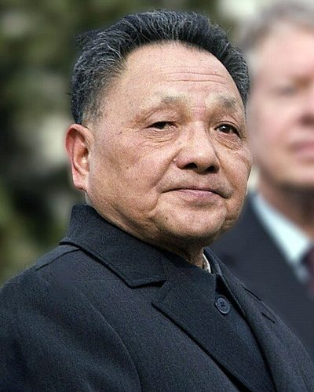

Ideologies / Radical Left
What is Dengism?
Dengism is a political ideology in the Radical Left family. Deng argued that poverty is not socialism and that the task of a socialist state is to develop the productive forces. Markets, private firms and foreign capital are tools to that end, to be judged by results. The Communist Party keeps an absolute monopoly on political power throughout.
Yellow cat or black cat, the one that catches mice is a good cat.
Defined from: Deng Xiaoping, Emancipate the Mind, Seek Truth from Facts and Unite as One in Looking to the Future (1978)
See how close you are to Dengism Dare a friend to answer as one

.jpg){kind=link}
Where Dengism stands on 13 axes
Each axis runs from 0 to 100. A score of 50 is the middle. On a classic compass it sits in the Authoritarian Left quadrant.
| Axis | Position | Score | In words |
|---|---|---|---|
| EconomyMarket to Planned | 45 | Balanced | |
| OwnershipPrivate to Collective | 60 | Leans Collective | |
| RightsLiberty to Security | 85 | Very strongly Security | |
| GovernmentDemocracy to Autocracy | 90 | Very strongly Autocracy | |
| StructureDecentralised to Centralised | 85 | Very strongly Centralised | |
| NationInternationalist to Nationalist | 70 | Strongly Nationalist | |
| ImmigrationMulticulturalist to Assimilationist | 60 | Leans Assimilationist | |
| ValuesProgressive to Traditional | 45 | Balanced | |
| TechnologyAccelerationist to Precautionary | 10 | Very strongly Accelerationist | |
| EnvironmentIndustrialist to Environmentalist | 10 | Very strongly Industrialist | |
| ReligionSecular to Religious | 0 | Very strongly Secular | |
| MilitaryPacifist to Militarist | 60 | Leans Militarist | |
| TradeFree Trade to Protectionist | 40 | Leans Free Trade |
Ideologies closest to Dengism
- Bukharinism (Right Opposition)82% alike
- Hobbesian Absolutism78% alike
- Nkrumaism76% alike
- Pan Turkism75% alike
- Kemalism75% alike
Its opposite on this map is Tolstoyan Anarcho Pacifism, at 22%.
Parties near Dengism
Communist Party of China of 1981 (China) was the first party or movement to carry it, placed here from Resolution on Certain Questions in the History of Our Party (1981).
- Communist Party of China of 1981China. Resolution on Certain Questions in the History of Our Party (1981)84% alike
- Communist Party of VietnamVietnam. Platform for National Construction (2011)82% alike
- Communist Party of ChinaChina. Constitution of the Communist Party of China (2022)81% alike
- Communist Party of China of 1940China. On New Democracy (1940)78% alike
Common questions
What is Dengism?
Dengism is a political ideology in the Radical Left family. Deng argued that poverty is not socialism and that the task of a socialist state is to develop the productive forces. Markets, private firms and foreign capital are tools to that end, to be judged by results. The Communist Party keeps an absolute monopoly on political power throughout.
What does Dengism believe?
In one line: Yellow cat or black cat, the one that catches mice is a good cat. Its strongest positions are Secular, Autocracy, Accelerationist. Deng argued that poverty is not socialism and that the task of a socialist state is to develop the productive forces. Markets, private firms and foreign capital are tools to that end, to be judged by results. The Communist Party keeps an absolute monopoly on political power throughout.
Who founded Dengism?
Dengism is defined here from Emancipate the Mind, Seek Truth from Facts and Unite as One in Looking to the Future (1978) by Deng Xiaoping. The thinker most tied to it is Deng Xiaoping (1904 to 1997).
Is Dengism left wing or right wing?
On a classic two axis compass Dengism falls in the Authoritarian Left quadrant, which means the economic centre and the authoritarian side. Left and right hide a lot, though, which is why EthosScales scores it on thirteen separate axes.
How is Dengism different from Bukharinism (Right Opposition)?
They are close: 82% alike. The biggest gaps are on Trade, where Dengism scores 40 and Bukharinism (Right Opposition) scores 75, and Nation, where Dengism scores 70 and Bukharinism (Right Opposition) scores 50. On each axis, 0 is one end and 100 is the other.
Think this is wrong? Suggest a correction. The scores are editorial estimates.